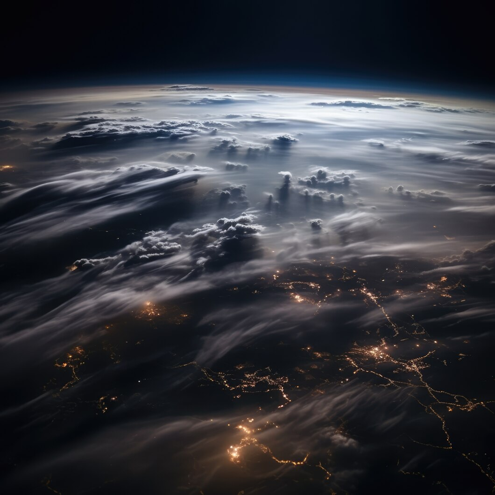

Мы вовсе не хотим завоевывать никакой космос, мы хотим расширить землю до его границ.

Мы вовсе не хотим завоевывать никакой космос, мы хотим расширить землю до его границ.
мы не знаем, что делать с иными мирами, нам не нужно других миров: нам нужно зеркало
мы бьемся над контактом и никогда не найдем его